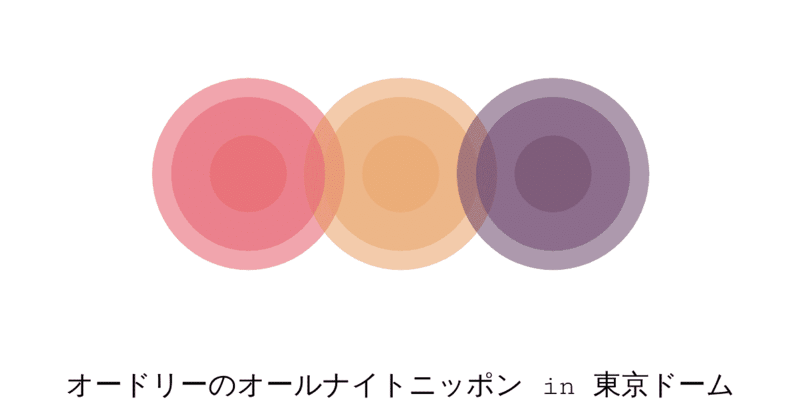

来年2月にオードリーが東京ドームでライブをする。
そんな一報が届いたのは今年の春先。
いつものようにオールナイトニッポンを聴いていたら、通常であれば二人で番組タイトルを読み上げるところが若林だけ。「春日は海外ロケか？まさか、また不祥事か？」となんとも無粋なことを思ってしまった私だが、それは春日に対する壮大なサプライズだったのだ。
実は、この日の放送は有楽町にあるニッポン放送のブースではなく、東京ドームからの生中継。そのことには一切触れず、若林は当時開催されていたWBCの話でリスナーを引っ張り、そこにようやく春日が目隠しされた状態で連れてこられたのだった。
思えば、2019年に若林が結婚した時の春日への報告も、オールナイトニッポンでのサプライズ報告だった。
若林が「奥さんが見える」という妄言を話し、それを春日があしらうというやり取りが結婚報告の何週間も前からあり、それが強烈なフリとなって「本当に奥さんがいた」というオチにダイレクトに繋がる様は、まるで長編の推理小説で全ての伏線が見事に回収されていくような感覚に近かった。
若林ならではのおふざけ話が、実はサプライズのステップになっていた。そして、それに驚いたのは春日だけではない。春日同様、リスナーもそのサプライズの対象者だったのだ。
最近のオードリーの活躍は凄まじい。
昨年のテレビ出演本数ランキング(エム・データ調べ)ではコンビ揃ってトップ5(春日にいたっては1位)に入っていたし、今年3月に開催されたあちこちオードリーのポップアップイベントでは想定以上の来場者数により整理券を配布し入場者規制をするほどであった。
また、主役はオードリーでないにせよ、明日最終回を迎えるドラマ『だが、情熱はある』では彼らが売れるまでの軌跡がプロの俳優たちによって表現された。その活躍ぶりは年々拍車がかかっているように見え、一体どこまで行ってしまうのだろうと思うことすらある。
今回の東京ドームライブもそうだ。
通常であれば、アーティストやアイドルがすることはあっても芸人がライブをするなんてほとんどなかった。過去、芸人が東京ドームをライブ会場にしたのはとんねるずだけのようで、こう聞くと僕なんかが想像もできない領域に彼らはいるような気がしてくる。
そもそもオードリーのオールナイトニッポンといえば、昔から言われていることだが、まるで男子校の部室にいるようなトークが多くのリスナーに支持されてきた。
「まだそんなこと言っているのかよ！」とツッコミが入りそうな気もするが、その魅力は未だ健在だと思うし、それは二人とも結婚をして子どももいて芸能界で確固たる地位を築いたとしても、ポジティブな意味で性根は中高時代と変わっていないからだと思う。
人生で初めてラジオの面白さを知ることができたのがオードリーのオールナイトニッポンだったこともあり、イチリスナーとして二人があの東京ドームでライブをするというのは、勝手に目頭が熱くなるほど嬉しいことだった。
人見知りでネガティブな若林と体育会系に見えて意外と根暗な春日。こう言うと、「二人とも暗いコンビなのかよ！」と思われてしまいそうだが、ラジオが始まった1年くらいはオードリーの知名度を上げたズレ漫才のキャラクター通りの喋り方で進行していた。次第に二人の素が露わになった頃から、「漫才のネタだけじゃなくて、二人のありのままの話を聴きたい」と思うようになった。
テレビの出演がどれだけ増えようとも、二人は変わらず深夜ラジオのパーソナリティとしてくだらない話を届けてくれる。それがとても温かくて、ほかの芸人には感じたことのない親近感に繋がっている。二人はもはや生活の一部であり、こちらが一方的に知っている親しい友人のような感覚なのだ。
今回の東京ドームライブのために、これまで手を出してこなかったYouTubeも始めた若林。東京ドームでの開催が一年を切った中、その準備の過程やオールナイトニッポンの裏事情を余すことなく配信し、僕を含めたファンの心を鷲掴みにしている。
こんなにも感情移入して応援する誰かを持てたことは幸せなのかもしれない。きっかけは違えど二人のファンである仲間とともに「東京ドームを満員にする」と意気込むオードリーをこれからも推していきたい。
そんなことを考えていたら、もうすぐオールナイトニッポンの時間だ。今夜も二人の話を聴きながら、眠りに落ちるのが楽しみな僕なのである。
https://www.youtube.com/watch?v=PBvknYIdyys